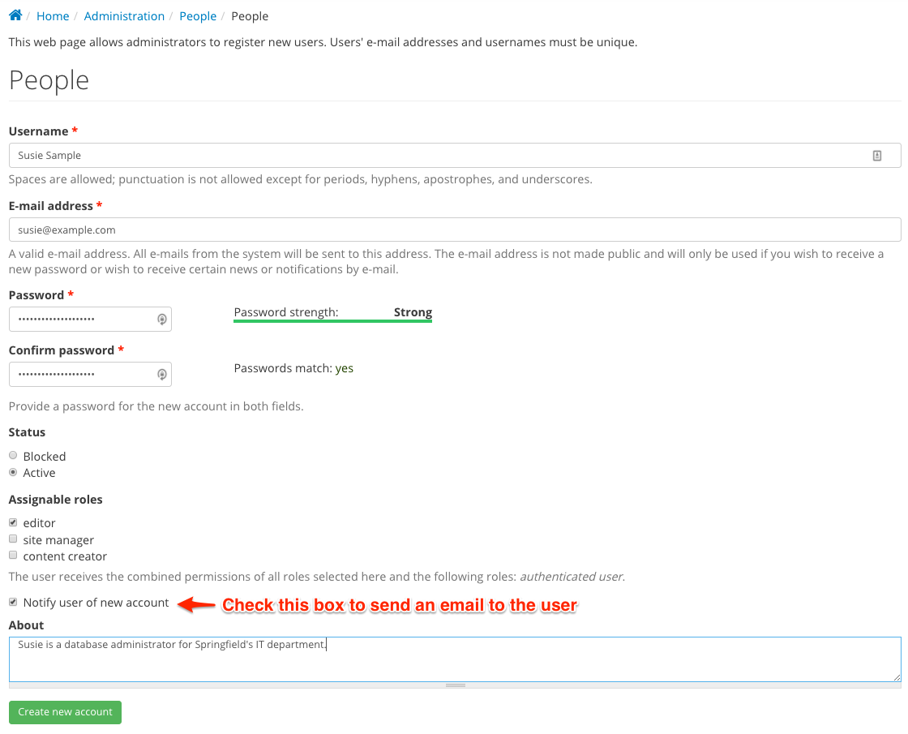
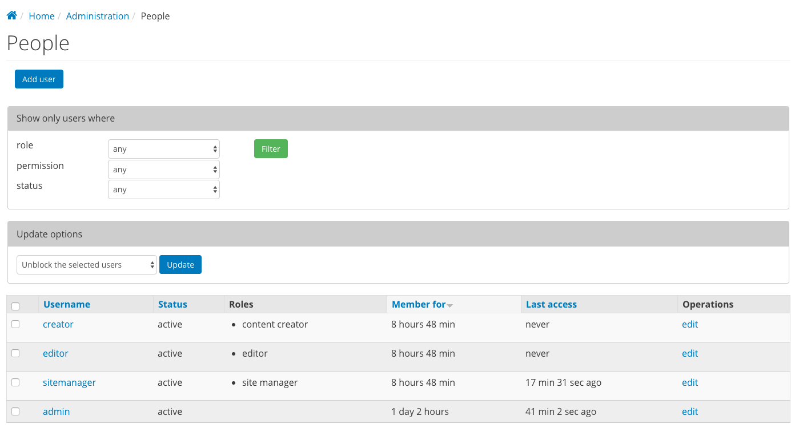

DKAN User Management¶
DKAN uses Drupal’s build-in, powerful user account system, with some customizations captured in the DKAN Sitewide User module. Flexible combinations of permissions, restrictions, and authorization schema mean that you can design an open data system that meets the needs of all of your users – from visitors to data publishers to developers – securely and easily.
Adding a new user¶
In this example we’ll add a new editor user to the site.
- Login to your site as the administrative super-user. Note the thin black administration menu that appears at the top of each page once you’ve logged in. This “admin menu” contains shortcuts to all administrative tasks.
- Visit your site’s User Management page by clicking “People” in the admin menu.</li>
- Select the “+ Add user” option at the top of the user management page to add a new user.</li>
- Complete the “add user” form as shown, adding the user to any roles such as “editor” as appropriate. Note the “notify user” option which will send an email with initial login instructions to the user’s email address.
- Click the “Create new account” button when complete.

Managing, Editing, and Deleting Existing Users¶
- Visit your site’s User Management page by clicking “People” in the admin menu.
- The displayed list of users on the User Management page can be filtered and sorted using the filters at the top of the page. Once you’ve found the user you wish to edit in the user table, click the “edit” link at the end of that user’s row.
- On the resulting “edit user” page, you can edit the user’s username, email, or profile information. You can also set a new password for the user. Click the “Save” button at the bottom of the page to save your changes.
- Use the “Cancel account” at the bottom of the edit user page to delete an account. You will be given the option to preserve or delete any website content added by that user before deletion.
